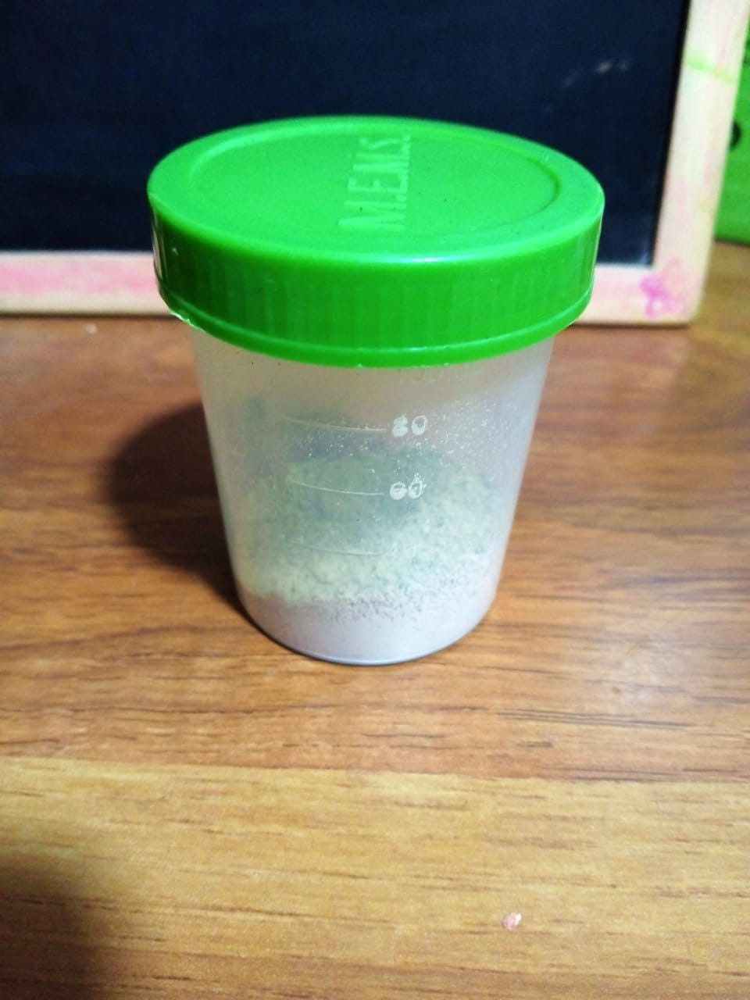
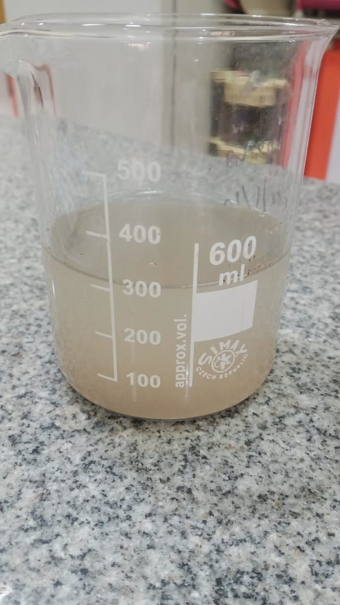
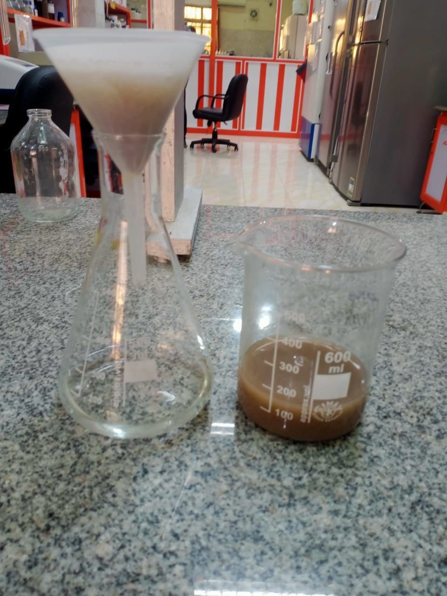
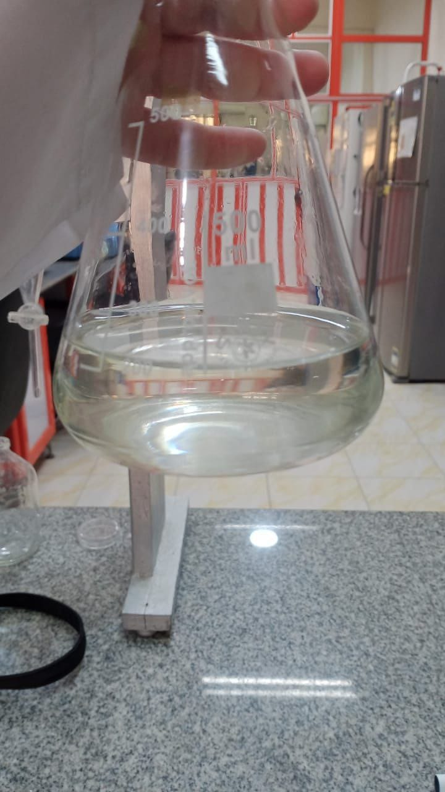
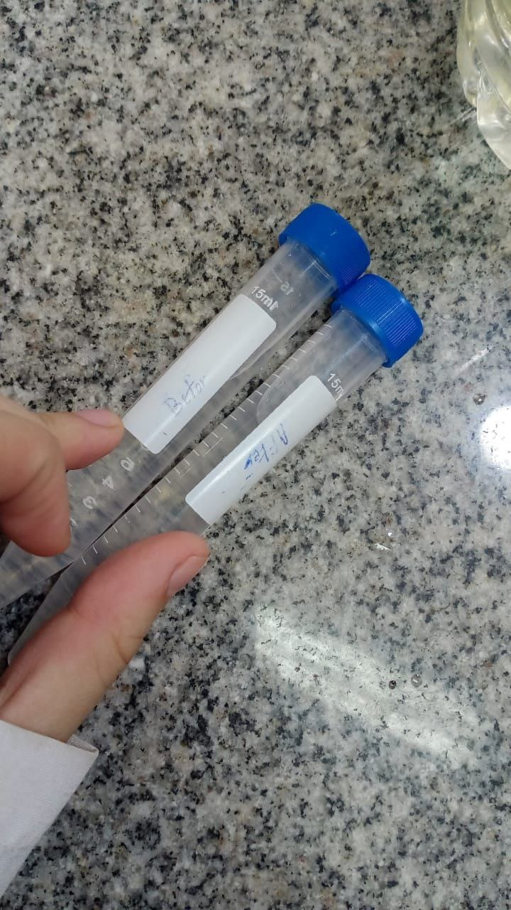

Composite Material from Natural Clays
for Purifying Industrial Wastewater
By: Elsaid Elgenedy & Yara Elsayed
Introduction
Water pollution is a dire global crisis, resulting in approximately 12 million annual deaths. Globally, 5.4 billion cubic meters of industrial wastewater are often disposed of without proper treatment, highlighting the critical need for a high-efficiency, low-cost solution. Our project introduces a novel composite material designed to purify this water. This material is a mixture of natural clays and additives: **Bentonite**, **Sawdust**, **ZnO**, and **Zeolite**. Utilizing the high absorption and adsorption capabilities of the clays, we achieve high removal efficiency comparable to standalone Zeolite and Bentonite, resulting in the removal of most pollutants at a significantly low cost (LE. per liter). This technology offers a viable path to overcome pollution and safely reuse industrial water. [Source Ref: 1, 2, 3]
Composite Material Composition
| Material | Function | Ratio |
|---|---|---|
| Bentonite | Adsorption (Heavy Metals, Dyes) | 25% |
| Zeolite | Adsorption (Ammonia, Cations) | 30% |
| Sawdust | Low-Cost Absorbent (Organic Matter) | 40% |
| Zinc Oxide (ZnO) | Antimicrobial / Catalysis | 5% |
Abstract
Addressing the global crisis of water contamination and scarcity.
The world faces a major challenge in water pollution, which impacts every aspect of daily life. Annually, over 12 million people die due to contaminated water. Projections from the WHO suggest that by 2030, 40% of the world's water will be polluted, while 1.7 billion people currently rely on treated wastewater for daily use. To address this, we targeted the 5.4 billion cubic meters of untreated industrial wastewater disposed of annually. Our solution is a novel composite material made from **Bentonite, Zeolite, Sawdust, and Zinc Oxide (ZnO)**, which purifies industrial wastewater with high efficiency, low production cost, and in minimal time. [Source Ref: 2, 4]
Methodology & Procedure
A detailed breakdown of the material preparation and purification experiment.
Phase 1: Raw Material Preparation
- **Bentonite & Zeolite:** Wash the raw materials by **distilled water** to ensure the removal of any free impurities, and then allow them to thoroughly dry. [Source Ref: 7]
- **Bentonite Activation:** To improve its adsorption performance, the bentonite is activated by placing it in a **5% Na₂CO₃ solution for 2 hours**, followed by washing it clean.
- **Sawdust Sterilization:** The sawdust is washed with **hot water** to remove any color or impurities, then **boiled for 15 minutes** to kill all bacteria present in the material before drying.
- **Zinc Oxide (ZnO):** Prepare the zinc oxide solution for later treatment.
Phase 2: Composite Formation & Treatment
Phase 3: Purification and Analysis
- **Purification:** We use **5 grams of the composite material for each liter** of industrial wastewater. The mixture is allowed to interact for a contact time of **30 minutes**.
- **Filtration:** After the contact time, the water is separated from the composite material by using a standard **filtration paper**.
- **Analysis & Measurement:** The purification efficiency is then accurately determined by comparing the levels of pollutants *before* and *after* treatment. The key parameters measured include:
- Total Dissolved Solids (**TDS**)
- Bacterial colony number
- Concentration of **heavy metals**
- Concentration of **dyes**
Purification Results
Visual and data-driven evidence of the material's effectiveness.
Quantitative Results: Pollutant Removal Efficiency
The chart below illustrates the high removal efficiency of the composite material. The data shows a significant reduction in pollutant concentrations after the contact time, confirming the material's effectiveness.
*Removal percentages are based on experimental data comparing pollutant levels before and after treatment.
Detailed Heavy Metal Analysis
Inorganic Chemistry Laboratory Results for Water Quality.
Holding Company for Water and Wastewater
Dakahlia Water and Wastewater Company
Laboratories and Quality Sector
Drinking Water Central Laboratory
Issue No. : 004
Issue Date : May 2019
Revision No. : 006
Rev. Date. : April 2023
Appendix 2: Form of coding samples and record the results for Inorganic chemistry laboratory
Date : 6/12/2025
Temperature: Humidity: REP No : Tested Parameter
Results
| Sample Number | Sample Type | Units | Heavy Metals | |||||||||
|---|---|---|---|---|---|---|---|---|---|---|---|---|
| Iron | Manganese | Copper | Zinc | Sodium | Potassium | Lead | Nickel | Cadmium | Chromium | |||
| * Drinking Water Criteria | ppm | 0.3 | 0.4 | 2 | 3 | 200 | -- | 10 | 20 | 3 | 50 | |
| % Uncertainty | -- | 7.54 | 3.84 | 6.72 | 1.65 | 8.85 | 7.03 | -- | -- | -- | -- | |
| LOD (Limit of Detection) | ppm | 0.023 | 0.04 | 0.007 | 0.007 | 0.02 | 0.012 | -- | -- | -- | -- | |
| LOQ (Limit of Quantitation) | ppm | 0.15 | 0.15 | 0.5 | 0.5 | 5 | 1 | -- | -- | -- | -- | |
| Method No. | -- | 3111 B | 3111 B | 3111 B | 3111 B | 3500- No B | 3500- K B | 3113 B | 3113 B | 3113 B | 3113 B | |
| 1 | Untreated Water (Control) | ppm | 50 | 50 | 50 | 50 | 50 | 50 | 50 | 50 | 50 | 50 |
| 2 | Treated Water (B-D-Z-ZnO) | ppm | 0.5 | 1.7 | 2.9 | 4.5 | 24 | 13 | 9.9 | 19 | 4 | 43 |
| Analytical Chem. | ||||||||||||
* Drinking water Criteria: Standard specifications for drinking water according to Ministry of health and population No. 458 / 2007.
🧪 In the Laboratory: Step-by-Step
Visual steps of the wastewater treatment experiment using the composite material.
- 
Step 1: Material Addition
**5 grams of the composite material** are accurately added to the industrial wastewater sample.

Step 2: Initial Contact
The water sample at the beginning of the treatment phase, showing the turbid industrial water mixed with the composite.
- 
Step 3: Contact Time (30 Min)
The same sample after the designated contact time, showing clear evidence of pollutant coagulation.
- 
Step 4: Material Removal
The composite material is carefully removed from the water using standard laboratory filtration techniques.
- 
Step 5: Final Clear Water
The final product: visibly clear water, ready for analytical testing.
- 
Step 6: Visual Confirmation
A direct comparison between the raw wastewater (left) and the purified water (right).
Future Work & Global Impact
The roadmap for developing the material and expanding its application.
- **Recycling:** Develop a process to recycle the material, ensuring the same purification quality for multiple uses, enhancing cost-effectiveness and sustainability.
- **International Standards:** Improve the material's efficiency across all pollutant types (heavy metals, dyes, bacteria, organic waste) to meet **international drinking water standards**.
- **Surface Area:** Increase the composite's surface area to achieve even higher and faster removal efficiency of wastes.
- **Performance Optimization:** Enhance the purification time and overall material performance, making it highly effective in a shorter contact period.
- **New Applications:** Expand the material's use to include the treatment of **agricultural wastewater**, tackling a major source of non-point source pollution.
Business Model & Strategy
An overview of our strategic plan, market analysis, and financial structure.
Value Proposition
90%+
High Efficiency
~4 LE/L
Low Cost
~30 min
Little Time
Safe
No Negative Impact
Eco-Friendly
Sustainable
Channels
- Official Website & E-commerce
- Direct Sales (B2B)
- Distributor Networks
- Digital Marketing & Ads
Key Activities
- Production & Quality Control
- Marketing and Sales
- Order Management & After-sales service
- Continuous R&D to improve efficiency
Cost Structure
Fixed Costs
- Equipment Cost: 7,000 LE
- Production Line: 10,000 LE
- Salaries: 10,000 LE
- Insurance: 1,500 LE
- Application Development: 10,000 LE
Variable Costs (per unit/period)
- Raw Materials (Bentonite: 150, Zeolite: 300, ZnO: 400, Sawdust: 10 LE/Kg)
- Electricity: 2,000 LE
- Packaging: 2,500 LE
- Shipping & Distribution: 3,500 LE
- Marketing: 4,000 LE
Competitor Analysis
| Method | Price | Quality/Efficiency | Time |
|---|---|---|---|
| Our Material | Low | High | Fast (~30 min) |
| Catalysis | High | Lower | Slow (0.5-2 days) |
| Absorption (e.g., Activated Carbon) | High | Lower | Moderate |
| Biota Bacteria | Varies | Varies | Very Slow (5-9 hours) |
Our Material Market
Total Available Market (TAM)
346B $
Global Market
Serviceable Available Market (SAM)
18B $
Market in Egypt
Serviceable Obtainable Market (SOM)
17.7M $
Targetable Market Share
SWOT Analysis
Strengths
- High efficiency (90%) & Low cost (~4 LE/L)
- Little time (~30 min)
- Eco-friendly solution
Weaknesses
- Need for initial financial support
Opportunities
- Increasing population and water demand
- Growing awareness of water pollution
Threats
- Poor economic conditions affecting investment
References & Resources
Scholarly articles supporting the material's components and treatment method.
- Dhar, A. K., Himu, H. A., Bhattacharjee, M., Mostufa, M. G., & Parvin, F. (2023). Insights on applications of bentonite clays for the removal of dyes and heavy metals from wastewater: a review. Environmental Science and Pollution Research, 30(3), 5440–5474.
- Patwardhan, A. D. (2017). Industrial wastewater treatment. PHI Learning Pvt. Ltd.
- Wong, P. K., & Chu, L. M. (2003). Industrial wastewater treatment. In Microbial Biotechnology: Principles And Applications (pp. 591–624). Springer.
- Muzaffar, S., Aslam, M. N., Rehman, S., Umer, S., Ahmed, S., Zahra, S. R., … & Anwar, H. (2020, May). A simple and low-cost purification method for microbial-free water using zinc oxide nanoparticles. In IOP Conference Series: Materials Science and Engineering, 863(1), 012037. IOP Publishing.
- Spoială, A., Ilie, C. I., Trușcă, R. D., Oprea, O. C., Surdu, V. A., Vasile, B. Ș., … & Dițu, L. M. (2021). Zinc oxide nanoparticles for water purification. Materials, 14(16), 4747.
- Margeta, K. Z. N., Siljeg, M., & Farkas, A. (2013). Natural zeolites in water treatment: How effective is their use. In Elshorbagy, W., & Chowdhury, R. (Eds.), Water Treatment (pp. 81–112). Springer.
- Gong, Z., Liao, L., Lv, G., & Wang, X. (2016). A simple method for physical purification of bentonite. Applied Clay Science, 119, 294–300.